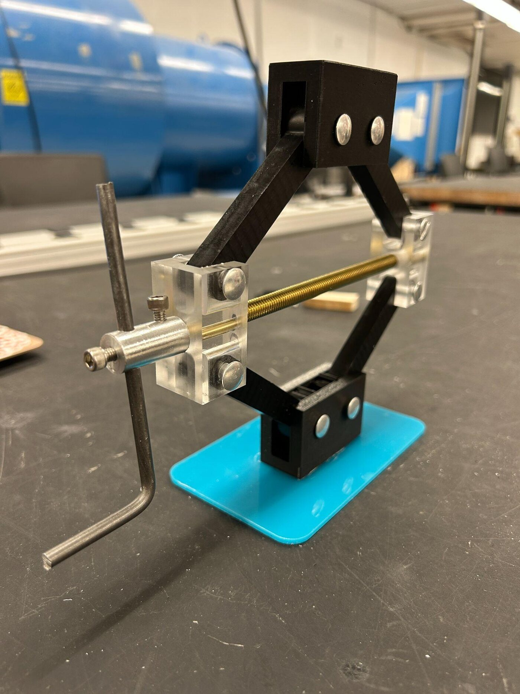
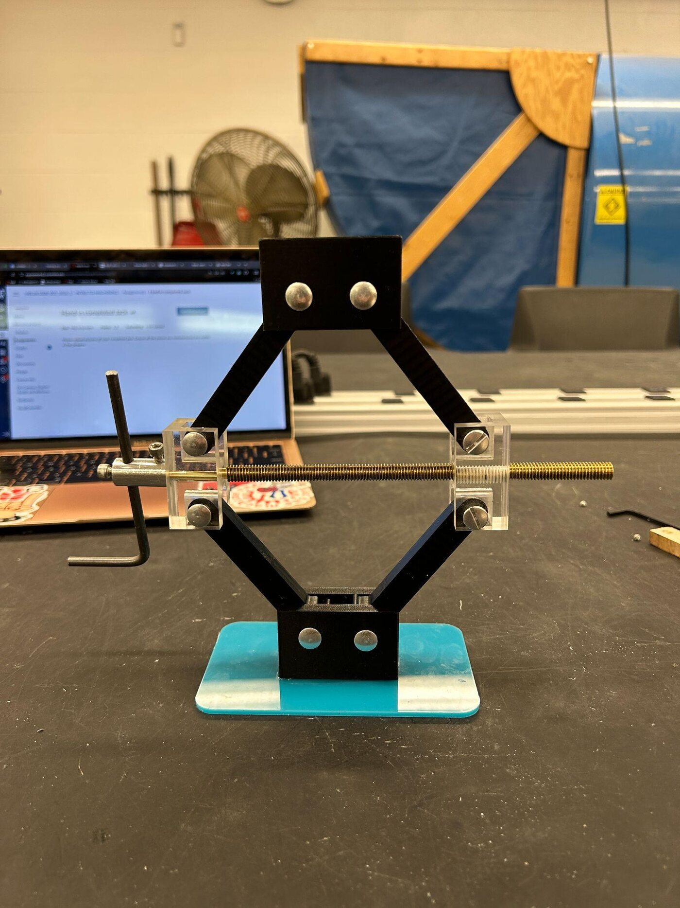
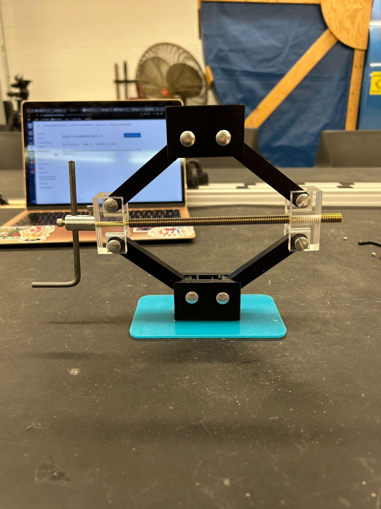
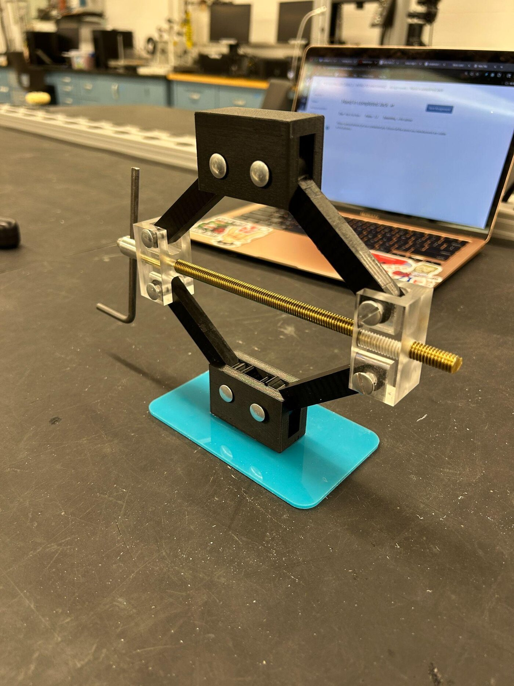

Machined scissor jack
A working lead-screw jack made from acrylic and printed parts — the project where the drawing stops being theoretical and the holes have to line up.

What it is
A scissor jack converts rotation of a lead screw into vertical lift through a four-bar linkage, multiplying force as the linkage approaches horizontal. Building one is a good machining project precisely because it is unforgiving: six pin joints have to be concentric, both nut blocks have to be tapped on the same axis, and the linkage binds if any of them is off.
Processes
The build spans four machines, chosen per part rather than by convenience:
- CNC mill — acrylic block machined down to the nut blocks. I designed the parts, wrote the G-code, and cut them.
- Bandsaw — stock acrylic cut to rough size before milling.
- Drill press — pin holes, where concentricity across the stack is what decides whether the mechanism moves freely.
- Laser cutter — the base plate.
The linkage arms are printed; the clear blocks and base are acrylic, which has the useful property of showing you exactly how the thread engages.



Why acrylic
Aluminum would be the obvious choice for nut blocks carrying thread load, and in a jack meant to lift anything it would be the right one. Acrylic was chosen because it machines cleanly at this scale and because it is transparent — you can watch the thread engage the block through the wall of the part, which turns an invisible mechanism into something you can inspect while it runs. For a learning build that visibility is worth more than the strength.
- Course
- Introduction to Machining
- Processes
- CNC mill, bandsaw, drill press, laser cutter
- Materials
- Acrylic, PLA, threaded steel rod